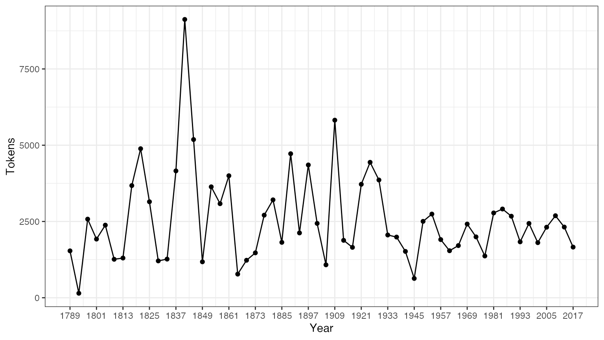
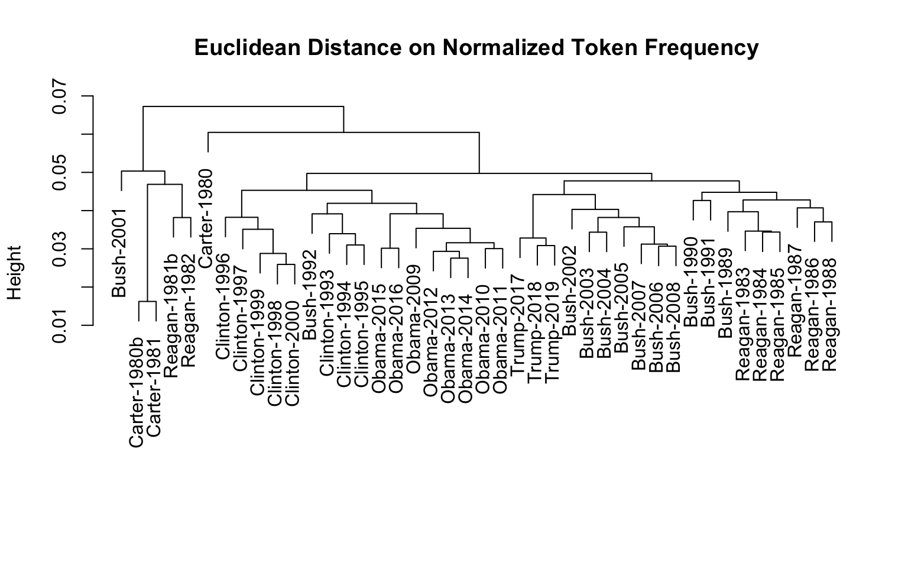

Installing the package
Since quanteda is available on CRAN, you can install by using your GUI’s R package installer, or execute:
install.packages("quanteda")
See an instructions at https://github.com/quanteda/quanteda to install the GitHub version,
Additional recommended packages:
The following packages work well with or extend quanteda and we recommend that you also install them:
readtext: An easy way to read text data into R, from almost any input format.
spacyr: NLP using the spaCy library, including part-of-speech tagging, entity recognition, and dependency parsing.
-
quanteda.corpora: Additional textual data for use with quanteda.
devtools::install_github("quanteda/quanteda.corpora")
-
quanteda.dictionaries: Various dictionaries for use with quanteda, including the function
liwcalike(), an R implementation of the Linguistic Inquiry and Word Count approach to text analysis.devtools::install_github("kbenoit/quanteda.dictionaries")
Creating a Corpus
You load the package to access to functions and data in the package.
library("quanteda")
Currently available corpus sources
quanteda has a simple and powerful companion package for loading texts: readtext. The main function in this package, readtext(), takes a file or fileset from disk or a URL, and returns a type of data.frame that can be used directly with the corpus() constructor function, to create a quanteda corpus object.
readtext() works on:
- text (
.txt) files; - comma-separated-value (
.csv) files; - XML formatted data;
- data from the Facebook API, in JSON format;
- data from the Twitter API, in JSON format; and
- generic JSON data.
The corpus constructor command corpus() works directly on:
- a vector of character objects, for instance that you have already loaded into the workspace using other tools;
- a
VCorpuscorpus object from the tm package. - a data.frame containing a text column and any other document-level metadata.
Building a corpus from a character vector
The simplest case is to create a corpus from a vector of texts already in memory in R. This gives the advanced R user complete flexibility with his or her choice of text inputs, as there are almost endless ways to get a vector of texts into R.
If we already have the texts in this form, we can call the corpus constructor function directly. We can demonstrate this on the built-in character object of the texts about immigration policy extracted from the 2010 election manifestos of the UK political parties (called data_char_ukimmig2010).
## Corpus consisting of 9 documents, showing 9 documents:
##
## Text Types Tokens Sentences
## BNP 1125 3280 88
## Coalition 142 260 4
## Conservative 251 499 15
## Greens 322 677 21
## Labour 298 680 29
## LibDem 251 483 14
## PC 77 114 5
## SNP 88 134 4
## UKIP 346 722 27If we wanted, we could add some document-level variables – what quanteda calls docvars – to this corpus.
We can do this using the R’s names() function to get the names of the character vector data_char_ukimmig2010, and assign this to a document variable (docvar).
docvars(corp_uk, "Party") <- names(data_char_ukimmig2010) docvars(corp_uk, "Year") <- 2010 summary(corp_uk)
## Corpus consisting of 9 documents, showing 9 documents:
##
## Text Types Tokens Sentences Party Year
## BNP 1125 3280 88 BNP 2010
## Coalition 142 260 4 Coalition 2010
## Conservative 251 499 15 Conservative 2010
## Greens 322 677 21 Greens 2010
## Labour 298 680 29 Labour 2010
## LibDem 251 483 14 LibDem 2010
## PC 77 114 5 PC 2010
## SNP 88 134 4 SNP 2010
## UKIP 346 722 27 UKIP 2010Loading in files using the readtext package
require(readtext) # Twitter json dat_json <- readtext("~/Dropbox/QUANTESS/social media/zombies/tweets.json") corp_twitter <- corpus(dat_json) summary(corp_twitter, 5) # generic json - needs a textfield specifier dat_sotu <- readtext("~/Dropbox/QUANTESS/Manuscripts/collocations/Corpora/sotu/sotu.json", textfield = "text") summary(corpus(dat_sotu), 5) # text file dat_txtone <- readtext("~/Dropbox/QUANTESS/corpora/project_gutenberg/pg2701.txt", cache = FALSE) summary(corpus(dat_txtone), 5) # multiple text files dat_txtmultiple1 <- readtext("~/Dropbox/QUANTESS/corpora/inaugural/*.txt", cache = FALSE) summary(corpus(dat_txtmultiple1), 5) # multiple text files with docvars from filenames dat_txtmultiple2 <- readtext("~/Dropbox/QUANTESS/corpora/inaugural/*.txt", docvarsfrom = "filenames", sep = "-", docvarnames = c("Year", "President")) summary(corpus(dat_txtmultiple2), 5) # XML data dat_xml <- readtext("~/Dropbox/QUANTESS/quanteda_working_files/xmlData/plant_catalog.xml", textfield = "COMMON") summary(corpus(dat_xml), 5) # csv file write.csv(data.frame(inaug_speech = texts(data_corpus_inaugural), docvars(data_corpus_inaugural)), file = "/tmp/inaug_texts.csv", row.names = FALSE) dat_csv <- readtext("/tmp/inaug_texts.csv", textfield = "inaug_speech") summary(corpus(dat_csv), 5)
How a quanteda corpus works
Corpus principles
A corpus is designed to be a “library” of original documents that have been converted to plain, UTF-8 encoded text, and stored along with meta-data at the corpus level and at the document-level. We have a special name for document-level meta-data: docvars. These are variables or features that describe attributes of each document.
A corpus is designed to be a more or less static container of texts with respect to processing and analysis. This means that the texts in corpus are not designed to be changed internally through (for example) cleaning or pre-processing steps, such as stemming or removing punctuation. Rather, texts can be extracted from the corpus as part of processing, and assigned to new objects, but the idea is that the corpus will remain as an original reference copy so that other analyses – for instance those in which stems and punctuation were required, such as analyzing a reading ease index – can be performed on the same corpus.
To extract texts from a corpus, we use an extractor, called texts().
texts(data_corpus_inaugural)[2]
## 1793-Washington
## "Fellow citizens, I am again called upon by the voice of my country to execute the functions of its Chief Magistrate. When the occasion proper for it shall arrive, I shall endeavor to express the high sense I entertain of this distinguished honor, and of the confidence which has been reposed in me by the people of united America.\n\nPrevious to the execution of any official act of the President the Constitution requires an oath of office. This oath I am now about to take, and in your presence: That if it shall be found during my administration of the Government I have in any instance violated willingly or knowingly the injunctions thereof, I may (besides incurring constitutional punishment) be subject to the upbraidings of all who are now witnesses of the present solemn ceremony.\n\n "To summarize the texts from a corpus, we can call a summary() method defined for a corpus.
summary(data_corpus_inaugural, n = 5)
## Corpus consisting of 58 documents, showing 5 documents:
##
## Text Types Tokens Sentences Year President FirstName
## 1789-Washington 625 1537 23 1789 Washington George
## 1793-Washington 96 147 4 1793 Washington George
## 1797-Adams 826 2577 37 1797 Adams John
## 1801-Jefferson 717 1923 41 1801 Jefferson Thomas
## 1805-Jefferson 804 2380 45 1805 Jefferson Thomas
## Party
## none
## none
## Federalist
## Democratic-Republican
## Democratic-RepublicanWe can save the output from the summary command as a data frame, and plot some basic descriptive statistics with this information:
tokeninfo <- summary(data_corpus_inaugural) tokeninfo$Year <- docvars(data_corpus_inaugural, "Year") if (require(ggplot2)) ggplot(data = tokeninfo, aes(x = Year, y = Tokens, group = 1)) + geom_line() + geom_point() + scale_x_continuous(labels = c(seq(1789, 2017, 12)), breaks = seq(1789, 2017, 12)) + theme_bw()
## Loading required package: ggplot2
# Longest inaugural address: William Henry Harrison tokeninfo[which.max(tokeninfo$Tokens), ]
## Text Types Tokens Sentences Year President FirstName Party
## 14 1841-Harrison 1898 9123 210 1841 Harrison William Henry WhigTools for handling corpus objects
Adding two corpus objects together
The + operator provides a simple method for concatenating two corpus objects. If they contain different sets of document-level variables, these will be stitched together in a fashion that guarantees that no information is lost. Corpus-level meta-data is also concatenated.
corp1 <- corpus(data_corpus_inaugural[1:5]) corp2 <- corpus(data_corpus_inaugural[53:58]) corp3 <- corp1 + corp2 summary(corp3)
## Corpus consisting of 11 documents, showing 11 documents:
##
## Text Types Tokens Sentences Year President FirstName
## 1789-Washington 625 1537 23 1789 Washington George
## 1793-Washington 96 147 4 1793 Washington George
## 1797-Adams 826 2577 37 1797 Adams John
## 1801-Jefferson 717 1923 41 1801 Jefferson Thomas
## 1805-Jefferson 804 2380 45 1805 Jefferson Thomas
## 1997-Clinton 773 2436 111 1997 Clinton Bill
## 2001-Bush 621 1806 97 2001 Bush George W.
## 2005-Bush 772 2312 99 2005 Bush George W.
## 2009-Obama 938 2689 110 2009 Obama Barack
## 2013-Obama 814 2317 88 2013 Obama Barack
## 2017-Trump 582 1660 88 2017 Trump Donald J.
## Party
## none
## none
## Federalist
## Democratic-Republican
## Democratic-Republican
## Democratic
## Republican
## Republican
## Democratic
## Democratic
## RepublicanSubsetting corpus objects
There is a method of the corpus_subset() function defined for corpus objects, where a new corpus can be extracted based on logical conditions applied to docvars:
summary(corpus_subset(data_corpus_inaugural, Year > 1990))
## Corpus consisting of 7 documents, showing 7 documents:
##
## Text Types Tokens Sentences Year President FirstName Party
## 1993-Clinton 642 1833 81 1993 Clinton Bill Democratic
## 1997-Clinton 773 2436 111 1997 Clinton Bill Democratic
## 2001-Bush 621 1806 97 2001 Bush George W. Republican
## 2005-Bush 772 2312 99 2005 Bush George W. Republican
## 2009-Obama 938 2689 110 2009 Obama Barack Democratic
## 2013-Obama 814 2317 88 2013 Obama Barack Democratic
## 2017-Trump 582 1660 88 2017 Trump Donald J. Republicansummary(corpus_subset(data_corpus_inaugural, President == "Adams"))
## Corpus consisting of 2 documents, showing 2 documents:
##
## Text Types Tokens Sentences Year President FirstName
## 1797-Adams 826 2577 37 1797 Adams John
## 1825-Adams 1003 3147 74 1825 Adams John Quincy
## Party
## Federalist
## Democratic-RepublicanExploring corpus texts
The kwic function (keywords-in-context) performs a search for a word and allows us to view the contexts in which it occurs:
kwic(data_corpus_inaugural, pattern = "terror")
##
## [1797-Adams, 1324] fraud or violence, by | terror |
## [1933-Roosevelt, 111] nameless, unreasoning, unjustified | terror |
## [1941-Roosevelt, 285] seemed frozen by a fatalistic | terror |
## [1961-Kennedy, 850] alter that uncertain balance of | terror |
## [1981-Reagan, 811] freeing all Americans from the | terror |
## [1997-Clinton, 1047] They fuel the fanaticism of | terror |
## [1997-Clinton, 1647] maintain a strong defense against | terror |
## [2009-Obama, 1619] advance their aims by inducing | terror |
##
## , intrigue, or venality
## which paralyzes needed efforts to
## , we proved that this
## that stays the hand of
## of runaway living costs.
## . And they torment the
## and destruction. Our children
## and slaughtering innocents, wekwic(data_corpus_inaugural, pattern = "terror", valuetype = "regex")
##
## [1797-Adams, 1324] fraud or violence, by | terror |
## [1933-Roosevelt, 111] nameless, unreasoning, unjustified | terror |
## [1941-Roosevelt, 285] seemed frozen by a fatalistic | terror |
## [1961-Kennedy, 850] alter that uncertain balance of | terror |
## [1961-Kennedy, 972] of science instead of its | terrors |
## [1981-Reagan, 811] freeing all Americans from the | terror |
## [1981-Reagan, 2186] understood by those who practice | terrorism |
## [1997-Clinton, 1047] They fuel the fanaticism of | terror |
## [1997-Clinton, 1647] maintain a strong defense against | terror |
## [2009-Obama, 1619] advance their aims by inducing | terror |
## [2017-Trump, 1117] civilized world against radical Islamic | terrorism |
##
## , intrigue, or venality
## which paralyzes needed efforts to
## , we proved that this
## that stays the hand of
## . Together let us explore
## of runaway living costs.
## and prey upon their neighbors
## . And they torment the
## and destruction. Our children
## and slaughtering innocents, we
## , which we will eradicatekwic(data_corpus_inaugural, pattern = "communist*")
##
## [1949-Truman, 832] the actions resulting from the | Communist |
## [1961-Kennedy, 510] required- not because the | Communists |
##
## philosophy are a threat to
## may be doing it,Using phrase() we can also look up multi-word expressions.
kwic(data_corpus_inaugural, pattern = phrase("United States")) %>% head() # show context of the first six occurrences of 'United States'
##
## [1789-Washington, 433:434] of the people of the | United States |
## [1789-Washington, 529:530] more than those of the | United States |
## [1797-Adams, 524:525] saw the Constitution of the | United States |
## [1797-Adams, 1716:1717] to the Constitution of the | United States |
## [1797-Adams, 2480:2481] support the Constitution of the | United States |
## [1805-Jefferson, 441:442] sees a taxgatherer of the | United States |
##
## a Government instituted by themselves
## . Every step by which
## in a foreign country.
## , and a conscientious determination
## , I entertain no doubt
## ? These contributions enable usIn the above summary, Year and President are variables associated with each document. We can access such variables with the docvars() function.
## Year President FirstName Party
## 1 1789 Washington George none
## 2 1793 Washington George none
## 3 1797 Adams John Federalist
## 4 1801 Jefferson Thomas Democratic-Republican
## 5 1805 Jefferson Thomas Democratic-Republican
## 6 1809 Madison James Democratic-RepublicanMore corpora are available from the quanteda.corpora package.
Extracting Features from a Corpus
In order to perform statistical analysis such as document scaling, we must extract a matrix associating values for certain features with each document. In quanteda, we use the dfm() function to produce such a matrix. “dfm” is short for document-feature matrix, and always refers to documents in rows and “features” as columns. We fix this dimensional orientation because it is standard in data analysis to have a unit of analysis as a row, and features or variables pertaining to each unit as columns. We call them “features” rather than terms, because features are more general than terms: they can be defined as raw terms, stemmed terms, the parts of speech of terms, terms after stopwords have been removed, or a dictionary class to which a term belongs. Features can be entirely general, such as ngrams or syntactic dependencies, and we leave this open-ended.
Tokenizing texts
To simply tokenize a text, quanteda provides a powerful command called tokens(). This produces an intermediate object, consisting of a list of tokens in the form of character vectors, where each element of the list corresponds to an input document.
tokens() is deliberately conservative, meaning that it does not remove anything from the text unless told to do so.
txt <- c(text1 = "This is $10 in 999 different ways,\n up and down; left and right!", text2 = "@kenbenoit working: on #quanteda 2day\t4ever, http://textasdata.com?page=123.") tokens(txt)
## Tokens consisting of 2 documents.
## text1 :
## [1] "This" "is" "$" "10" "in" "999"
## [7] "different" "ways" "," "up" "and" "down"
## [ ... and 5 more ]
##
## text2 :
## [1] "@kenbenoit" "working"
## [3] ":" "on"
## [5] "#quanteda" "2day"
## [7] "4ever" ","
## [9] "http://textasdata.com?page=123."tokens(txt, remove_numbers = TRUE, remove_punct = TRUE)
## Tokens consisting of 2 documents.
## text1 :
## [1] "This" "is" "$" "in" "different" "ways"
## [7] "up" "and" "down" "left" "and" "right"
##
## text2 :
## [1] "@kenbenoit" "working"
## [3] "on" "#quanteda"
## [5] "2day" "4ever"
## [7] "http://textasdata.com?page=123."tokens(txt, remove_numbers = FALSE, remove_punct = TRUE)
## Tokens consisting of 2 documents.
## text1 :
## [1] "This" "is" "$" "10" "in" "999"
## [7] "different" "ways" "up" "and" "down" "left"
## [ ... and 2 more ]
##
## text2 :
## [1] "@kenbenoit" "working"
## [3] "on" "#quanteda"
## [5] "2day" "4ever"
## [7] "http://textasdata.com?page=123."tokens(txt, remove_numbers = TRUE, remove_punct = FALSE)
## Tokens consisting of 2 documents.
## text1 :
## [1] "This" "is" "$" "in" "different" "ways"
## [7] "," "up" "and" "down" ";" "left"
## [ ... and 3 more ]
##
## text2 :
## [1] "@kenbenoit" "working"
## [3] ":" "on"
## [5] "#quanteda" "2day"
## [7] "4ever" ","
## [9] "http://textasdata.com?page=123."tokens(txt, remove_numbers = FALSE, remove_punct = FALSE)
## Tokens consisting of 2 documents.
## text1 :
## [1] "This" "is" "$" "10" "in" "999"
## [7] "different" "ways" "," "up" "and" "down"
## [ ... and 5 more ]
##
## text2 :
## [1] "@kenbenoit" "working"
## [3] ":" "on"
## [5] "#quanteda" "2day"
## [7] "4ever" ","
## [9] "http://textasdata.com?page=123."tokens(txt, remove_numbers = FALSE, remove_punct = FALSE, remove_separators = FALSE)
## Tokens consisting of 2 documents.
## text1 :
## [1] "This" " " "is" " " "$" "10"
## [7] " " "in" " " "999" " " "different"
## [ ... and 18 more ]
##
## text2 :
## [1] "@kenbenoit" " " "working" ":" " "
## [6] "on" " " "#quanteda" " " "2day"
## [11] "\t" "4ever"
## [ ... and 3 more ]We also have the option to tokenize characters:
tokens("Great website: http://textasdata.com?page=123.", what = "character")
## Tokens consisting of 1 document.
## text1 :
## [1] "G" "r" "e" "a" "t" "w" "e" "b" "s" "i" "t" "e"
## [ ... and 32 more ]tokens("Great website: http://textasdata.com?page=123.", what = "character", remove_separators = FALSE)
## Tokens consisting of 1 document.
## text1 :
## [1] "G" "r" "e" "a" "t" " " "w" "e" "b" "s" "i" "t"
## [ ... and 34 more ]and sentences:
# sentence level tokens(c("Kurt Vongeut said; only assholes use semi-colons.", "Today is Thursday in Canberra: It is yesterday in London.", "En el caso de que no puedas ir con ellos, ¿quieres ir con nosotros?"), what = "sentence")
## Tokens consisting of 3 documents.
## text1 :
## [1] "Kurt Vongeut said; only assholes use semi-colons."
##
## text2 :
## [1] "Today is Thursday in Canberra: It is yesterday in London."
##
## text3 :
## [1] "En el caso de que no puedas ir con ellos, ¿quieres ir con nosotros?"With tokens_compound(), we can concatenate multi-word expressions and keep them as a single feature in subsequent analyses:
tokens("New York City is located in the United States.") %>% tokens_compound(pattern = phrase(c("New York City", "United States")))
## Tokens consisting of 1 document.
## text1 :
## [1] "New_York_City" "is" "located" "in"
## [5] "the" "United_States" "."Constructing a document-feature matrix
Tokenizing texts is an intermediate option, and most users will want to skip straight to constructing a document-feature matrix. For this, we have a Swiss-army knife function, called dfm(), which performs tokenization and tabulates the extracted features into a matrix of documents by features. Unlike the conservative approach taken by tokens(), the dfm() function applies certain options by default, such as tolower() – a separate function for lower-casing texts – and removes punctuation. All of the options to tokens() can be passed to dfm(), however.
corp_inaug_post1990 <- corpus_subset(data_corpus_inaugural, Year > 1990) # make a dfm dfmat_inaug_post1990 <- dfm(corp_inaug_post1990) dfmat_inaug_post1990[, 1:5]
## Document-feature matrix of: 7 documents, 5 features (0.0% sparse) and 4 docvars.
## features
## docs my fellow citizens , today
## 1993-Clinton 7 5 2 139 10
## 1997-Clinton 6 7 7 131 5
## 2001-Bush 3 1 9 110 2
## 2005-Bush 2 3 6 120 3
## 2009-Obama 2 1 1 130 6
## 2013-Obama 3 3 6 99 4
## [ reached max_ndoc ... 1 more document ]Other options for a dfm() include removing stopwords, and stemming the tokens.
# make a dfm, removing stopwords and applying stemming dfmat_inaug_post1990 <- dfm(dfmat_inaug_post1990, remove = stopwords("english"), stem = TRUE, remove_punct = TRUE)
## Warning: remove_punct argument is not used.dfmat_inaug_post1990[, 1:5]
## Document-feature matrix of: 7 documents, 5 features (2.86% sparse) and 4 docvars.
## features
## docs fellow citizen , today celebr
## 1993-Clinton 5 2 139 10 4
## 1997-Clinton 7 8 131 6 1
## 2001-Bush 1 10 110 2 0
## 2005-Bush 3 7 120 3 2
## 2009-Obama 1 1 130 6 2
## 2013-Obama 3 8 99 6 1
## [ reached max_ndoc ... 1 more document ]The option remove provides a list of tokens to be ignored. Most users will supply a list of pre-defined “stop words”, defined for numerous languages, accessed through the stopwords() function:
## [1] "i" "me" "my" "myself" "we"
## [6] "our" "ours" "ourselves" "you" "your"
## [11] "yours" "yourself" "yourselves" "he" "him"
## [16] "his" "himself" "she" "her" "hers"## [1] "и" "в" "во" "не" "что" "он" "на" "я" "с" "со"## [1] "فى" "في" "كل" "لم" "لن" "له" "من" "هو" "هي" "قوة"Viewing the document-feature matrix
The dfm can be inspected in the Environment pane in RStudio, or by calling R’s View() function. Calling textplot_wordcloud() on a dfm will display a wordcloud.
## Document-feature matrix of: 9 documents, 1,551 features (83.8% sparse).
## features
## docs immigration unparalleled crisis bnp can solve current birth
## BNP 21 1 2 13 1 2 4 4
## Coalition 6 0 0 0 0 0 1 0
## Conservative 3 0 0 0 2 0 0 0
## Greens 8 0 0 0 1 0 0 0
## Labour 13 0 0 0 1 0 0 0
## LibDem 5 0 0 0 2 0 0 0
## features
## docs rates indigenous
## BNP 2 5
## Coalition 0 0
## Conservative 0 0
## Greens 0 0
## Labour 0 0
## LibDem 0 0
## [ reached max_ndoc ... 3 more documents, reached max_nfeat ... 1,541 more features ]To access a list of the most frequently occurring features, we can use topfeatures():
topfeatures(dfmat_uk, 20) # 20 most frequent words
## immigration british people asylum britain uk
## 66 37 35 29 28 27
## system population country new immigrants ensure
## 27 21 20 19 17 17
## shall citizenship social national bnp illegal
## 17 16 14 14 13 13
## work percent
## 13 12Plotting a word cloud is done using textplot_wordcloud(), for a dfm class object. This function passes arguments through to wordcloud() from the wordcloud package, and can prettify the plot using the same arguments:
set.seed(100) textplot_wordcloud(dfmat_uk, min_count = 6, random_order = FALSE, rotation = 0.25, color = RColorBrewer::brewer.pal(8, "Dark2"))

Grouping documents by document variable
Often, we are interested in analysing how texts differ according to substantive factors which may be encoded in the document variables, rather than simply by the boundaries of the document files. We can group documents which share the same value for a document variable when creating a dfm:
dfmat_pres <- dfm(tail(data_corpus_inaugural, 20), groups = "Party", remove = stopwords("english"), remove_punct = TRUE)
We can sort this dfm, and inspect it:
dfm_sort(dfmat_pres)
## Document-feature matrix of: 2 documents, 4,357 features (32.6% sparse) and 1 docvar.
## features
## docs us world people can must new america nation freedom time
## Democratic 130 84 78 80 87 88 54 72 43 50
## Republican 140 107 89 84 68 66 83 62 84 58
## [ reached max_nfeat ... 4,347 more features ]Grouping words by dictionary or equivalence class
For some applications we have prior knowledge of sets of words that are indicative of traits we would like to measure from the text. For example, a general list of positive words might indicate positive sentiment in a movie review, or we might have a dictionary of political terms which are associated with a particular ideological stance. In these cases, it is sometimes useful to treat these groups of words as equivalent for the purposes of analysis, and sum their counts into classes.
For example, let’s look at how words associated with terrorism and words associated with the economy vary by President in the inaugural speeches corpus. From the original corpus, we select Presidents since Clinton:
corp_inaug_post1991 <- corpus_subset(data_corpus_inaugural, Year > 1991)
Now we define a demonstration dictionary:
dict <- dictionary(list(terror = c("terrorism", "terrorists", "threat"), economy = c("jobs", "business", "grow", "work")))
We can use the dictionary when making the dfm:
dfmat_inaug_post1991_dict <- dfm(corp_inaug_post1991, dictionary = dict) dfmat_inaug_post1991_dict
## Document-feature matrix of: 7 documents, 2 features (14.3% sparse) and 4 docvars.
## features
## docs terror economy
## 1993-Clinton 0 8
## 1997-Clinton 1 8
## 2001-Bush 0 4
## 2005-Bush 1 6
## 2009-Obama 1 10
## 2013-Obama 1 6
## [ reached max_ndoc ... 1 more document ]The constructor function dictionary() also works with two common “foreign” dictionary formats: the LIWC and Provalis Research’s Wordstat format. For instance, we can load the LIWC and apply this to the Presidential inaugural speech corpus:
dictliwc <- dictionary(file = "~/Dropbox/QUANTESS/dictionaries/LIWC/LIWC2001_English.dic", format = "LIWC") dfmat_inaug_subset <- dfm(data_corpus_inaugural[52:58], dictionary = dictliwc) dfmat_inaug_subset[, 1:10]
Further examples
Similarities between texts
dfmat_inaug_post1980 <- dfm(corpus_subset(data_corpus_inaugural, Year > 1980), remove = stopwords("english"), stem = TRUE, remove_punct = TRUE) tstat_obama <- textstat_simil(dfmat_inaug_post1980, dfmat_inaug_post1980[c("2009-Obama", "2013-Obama"), ], margin = "documents", method = "cosine") tstat_obama
## textstat_simil object; method = "cosine"
## 2009-Obama 2013-Obama
## 1981-Reagan 0.623 0.638
## 1985-Reagan 0.643 0.663
## 1989-Bush 0.625 0.578
## 1993-Clinton 0.628 0.627
## 1997-Clinton 0.659 0.647
## 2001-Bush 0.602 0.619
## 2005-Bush 0.527 0.587
## 2009-Obama 1.000 0.682
## 2013-Obama 0.682 1.000
## 2017-Trump 0.519 0.516# dotchart(as.list(tstat_obama)$'2009-Obama', xlab = 'Cosine similarity')
We can use these distances to plot a dendrogram, clustering presidents:
data_corpus_sotu <- readRDS(url("https://quanteda.org/data/data_corpus_sotu.rds")) dfmat_sotu <- dfm(corpus_subset(data_corpus_sotu, Date > as.Date("1980-01-01")), stem = TRUE, remove_punct = TRUE, remove = stopwords("english")) dfmat_sotu <- dfm_trim(dfmat_sotu, min_termfreq = 5, min_docfreq = 3) # hierarchical clustering - get distances on normalized dfm tstat_dist <- textstat_dist(dfm_weight(dfmat_sotu, scheme = "prop")) # hiarchical clustering the distance object pres_cluster <- hclust(as.dist(tstat_dist)) # label with document names pres_cluster$labels <- docnames(dfmat_sotu) # plot as a dendrogram plot(pres_cluster, xlab = "", sub = "", main = "Euclidean Distance on Normalized Token Frequency")

We can also look at term similarities:
tstat_sim <- textstat_simil(dfmat_sotu, dfmat_sotu[, c("fair", "health", "terror")], method = "cosine", margin = "features") lapply(as.list(tstat_sim), head, 10)
## $fair
## time better far strategi us lower long one
## 0.8266617 0.8135324 0.8036487 0.8002557 0.8000581 0.7995066 0.7977770 0.7949795
## practic american
## 0.7944127 0.7892432
##
## $health
## system issu privat need expand support reform hous
## 0.9232094 0.9229859 0.9175231 0.9143293 0.9118901 0.9072374 0.9057456 0.9054303
## dramat mani
## 0.9051588 0.9045851
##
## $terror
## terrorist coalit cheney evil homeland 11th sudden regim
## 0.8539894 0.8179609 0.8175618 0.7949619 0.7878223 0.7603221 0.7556575 0.7533021
## septemb tyranni
## 0.7502925 0.7383253Scaling document positions
Here is a demonstration of unsupervised document scaling comparing the “Wordfish” model:
if (require("quanteda.textmodels")) { dfmat_ire <- dfm(data_corpus_irishbudget2010) tmod_wf <- textmodel_wordfish(dfmat_ire, dir = c(2, 1)) # plot the Wordfish estimates by party textplot_scale1d(tmod_wf, groups = docvars(dfmat_ire, "party")) }
## Loading required package: quanteda.textmodels##
## Attaching package: 'quanteda.textmodels'## The following object is masked from 'package:quanteda':
##
## data_dfm_lbgexampleTopic models
quanteda makes it very easy to fit topic models as well, e.g.:
quant_dfm <- dfm(data_corpus_irishbudget2010, remove_punct = TRUE, remove_numbers = TRUE, remove = stopwords("english")) quant_dfm <- dfm_trim(quant_dfm, min_termfreq = 4, max_docfreq = 10) quant_dfm
## Document-feature matrix of: 14 documents, 1,263 features (64.5% sparse) and 6 docvars.
## features
## docs supplementary april said period severe today report
## Lenihan, Brian (FF) 7 1 1 2 3 9 6
## Bruton, Richard (FG) 0 1 0 0 0 6 5
## Burton, Joan (LAB) 0 0 4 2 0 13 1
## Morgan, Arthur (SF) 1 3 0 3 0 4 0
## Cowen, Brian (FF) 0 0 0 4 1 3 2
## Kenny, Enda (FG) 1 4 4 1 0 2 0
## features
## docs difficulties months road
## Lenihan, Brian (FF) 6 11 2
## Bruton, Richard (FG) 0 0 1
## Burton, Joan (LAB) 1 3 1
## Morgan, Arthur (SF) 1 4 2
## Cowen, Brian (FF) 1 3 2
## Kenny, Enda (FG) 0 2 5
## [ reached max_ndoc ... 8 more documents, reached max_nfeat ... 1,253 more features ]Now we can fit the topic model and plot it:
set.seed(100) if (require("stm")) { my_lda_fit20 <- stm(quant_dfm, K = 20, verbose = FALSE) plot(my_lda_fit20) }
## Loading required package: stm## stm v1.3.5 successfully loaded. See ?stm for help.
## Papers, resources, and other materials at structuraltopicmodel.com